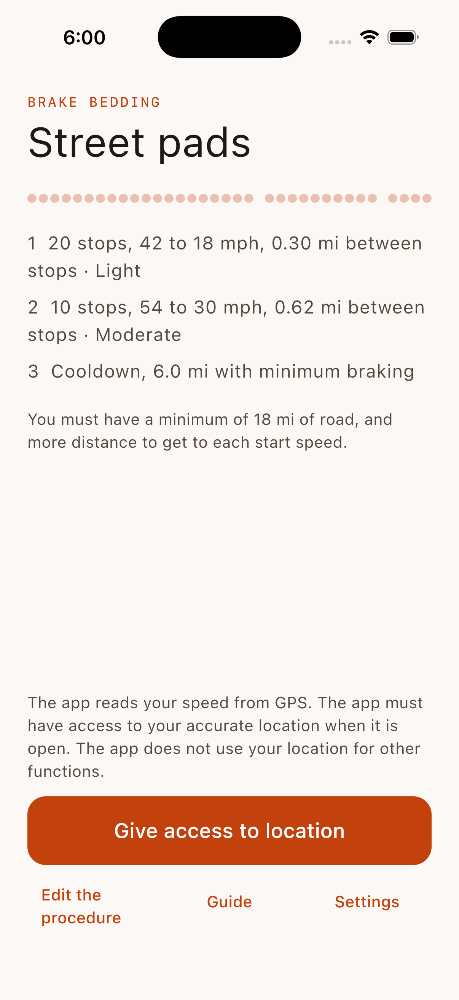
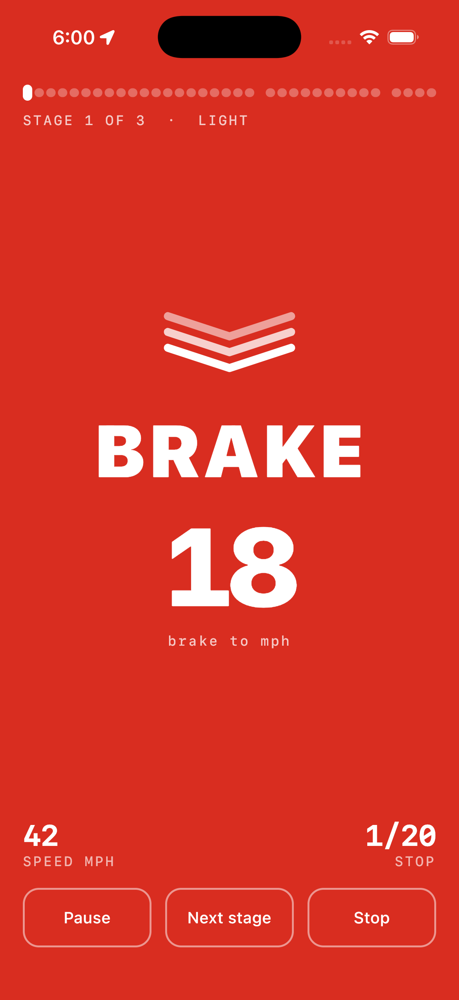
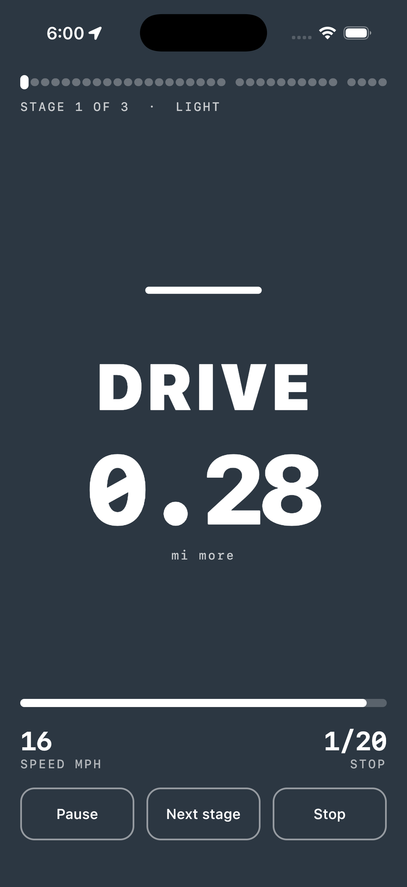

Brake Bedding
For Android and iOS
Bed in new brakes with clear, spoken instructions.
New brake pads and rotors need a bedding procedure: a series of controlled stops that puts an equal layer of pad material on the rotor surface. The procedure is simple, but it is difficult to do from memory at speed. Brake Bedding reads your speed from GPS and gives you one clear instruction at a time — on the screen, in your ears, and through vibration.



What it does
- One instruction at a time. Each phase has its own full-screen color and its own symbol. You can read it in a glance.
- Spoken cues. The app speaks each instruction, so your eyes stay on the road. Music becomes quieter for a cue.
- Runs in the background. A call or a dark screen does not stop the run. On iOS, a Live Activity shows the instruction in the Dynamic Island.
- Your procedure. Edit the stages, start from presets, and select mph or km/h.
- Private by construction. The app has no network access. Your location stays on your device.
Safety first
Do the procedure only on an empty and safe road, and obey all speed limits. The app is a guide: it cannot see the road, and the instructions from your pad manufacturer have priority. The full safety notes are in the app's guide.